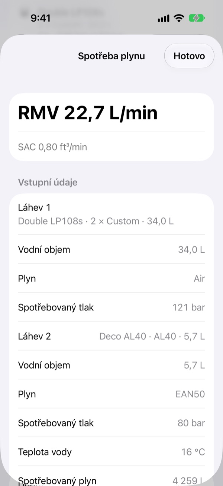

Nejdřív aktualizujte všechna zařízení
Mnoho problémů zmizí, když na všech zařízeních běží nejnovější build. Otevřete TestFlight na každém iPhonu, iPadu a Macu, který používáte, a nainstalujte všechny aktualizace. Starší build přestane odesílat změny, dokud ho neaktualizujete, a zobrazí Aktualizujte Thermocline, aby synchronizace pokračovala. Vaše změny zůstanou zachované a po aktualizaci se odešlou.
Stahování z potápěčského počítače
Počítač nebyl nalezen
- Probuďte počítač a přepněte ho do režimu Bluetooth (Shearwater: Menu → Bluetooth). Vydrží v něm jen asi dvě minuty.
- Držte ho blízko iPhonu, iPadu nebo Macu.
- Počítače Shearwater se vracejí k poslednímu zařízení, které použily. Pokud je poblíž váš telefon nebo jiný Mac, vypněte na tom zařízení Bluetooth a zkuste to znovu.
- Zkontrolujte, že je Bluetooth zapnuté a že ho Thermocline smí používat (iPhone: Nastavení → Thermocline; Mac: Nastavení systému → Soukromí a zabezpečení → Bluetooth).
Je to Predator nebo Petrel 1 a iPhone ho nevidí
Používají starší Bluetooth (Bluetooth Classic), které iPhony a iPady používat neumí. Stáhněte je na Macu (viz průvodce), nebo jejich ponory importujte ze Shearwater Cloud či ze souboru UDDF.
Připojí se, ale chce PIN
Zadejte kód zobrazený na displeji počítače. Je potřeba jen poprvé.
„Žádné nové ponory“
Stahují se jen ponory novější než vaše poslední stahování. Pokud jste ponor smazali a chcete ho zpět, zapněte Stáhnout všechny ponory z počítače a stáhněte znovu. Ponory, které už v logbooku máte, se přeskočí.
Stahování se v půlce zastavilo
Zvolte Ponechat, aby se uložily ponory, které dorazily, a pak stáhněte znovu zbytek. Pokud se to zastavuje opakovaně, zvolte Zkusit znovu blízko počítače a pošlete log stahování.
Stahování kabelem na Macu selhává
- Zkontrolujte, že port odpovídá kabelu: seznam uvádí, jakého druhu je každý port, a upozorní, když není pro zvolený model.
- Odpojte a znovu připojte kabel a pak tlačítkem obnovení znovu vyhledejte kabely.
- Postupujte podle kroků Než začnete pro váš model.
- Stahování kabelem je novinka. Pošlete prosím log stahování v každém případě.
Synchronizace mezi zařízeními
Aplikace na iPhonu píše, že Thermocline je teď jedna aplikace, nebo vidím dvě aplikace Thermocline
18. listopadu 2026 se aplikace pro iPhone, iPad, Mac a Apple Watch spojily v jednu aplikaci s jedním odkazem na betu. Aplikace pro iPhone, kterou jste měli dřív, vám teď pomůže jen s přechodem.
- Otevřete starou aplikaci. Pokud píše, že je synchronizace vypnutá, klepněte na Zapnout „Synchronizovat s iCloudem“ a nechte ji minutu otevřenou, nebo klepněte na Exportovat můj logbook jako UDDF a soubor uložte.
- Klepněte na Připojit se k nové betě, nebo na iPhonu otevřete odkaz na betu, a nainstalujte novou aplikaci. Bude vedle té staré.
- V nové aplikaci zapněte Profil → Synchronizovat s iCloudem. Vaše ponory, lokality, výstroj a nastavení se vrátí. Pokud jste místo toho exportovali, použijte Profil → Importovat soubor logbooku.
- Možná bude potřeba znovu spárovat potápěčský počítač a znovu nainstalovat aplikaci pro hodinky z aplikace Watch na iPhonu.
- Až nová aplikace ukáže stejné ponory, starou smažte.
Na Macu se nic nemění: aplikaci pro Mac aktualizujte jako obvykle.
Po synchronizaci ponory chybí nebo jsou zdvojené
- Zatím nic neměňte. Na každém zařízení pořiďte snímek obrazovky části Synchronizace (iPhone: Profil → Synchronizace; Mac: Thermocline → Nastavení → Synchronizace) a pošlete ho.
- Zkontrolujte, že je na všech zařízeních nejnovější build.
- Profil → Vaše data → Body obnovení umí vrátit váš logbook do stavu před importem, sloučením nebo smazáním. Obnovení nejprve uloží váš současný logbook, takže ho lze vrátit zpět.
Změna na jednom zařízení se na druhém neprojeví
- Zkontrolujte, že je Synchronizovat s iCloudem zapnuté na obou a že jsou přihlášená ke stejnému účtu Apple.
- Podívejte se na Čeká na odeslání na zařízení, kde jste změnu udělali, a otevřete aplikaci na obou se signálem. Část Synchronizace ukáže, kdy se toto zařízení a vaše ostatní shodují.
- Stiskněte Synchronizovat nyní.
„Nejste přihlášeni k iCloudu“
Přihlaste se k iCloudu v Nastavení zařízení. Do té doby váš logbook zůstává v bezpečí na tomto zařízení a po přihlášení se synchronizuje.
„Vaše úložiště iCloud je plné“
Váš logbook je v bezpečí na zařízení a synchronizuje se, až bude místo. Uvolněte místo na iCloudu, nebo zapněte Šetřit úložiště iCloud u fotek z ponorů, aby se fotky neukládaly dvakrát.
„Jiné zařízení používá novější verzi“
Aktualizujte Thermocline na tomto zařízení v TestFlightu. Vaše změny jsou zde v bezpečí a odešlou se po aktualizaci.
Importy
Některé ponory nebo údaje se nenačetly
Zpráva o importu vypíše vše v části Neimportováno a Zkontrolujte prosím i s důvodem. Každý logbook zapisuje UDDF trochu jinak, takže chybějící hodnoty jsou normální a zůstanou prázdné. Pokud chybí něco, co jste čekali, pošlete zprávu a pokud můžete, i soubor.
Chybí mi výstroj, fotky nebo typy ponoru z MacDive
Export UDDF z MacDive je vynechává. Pro výstroj, štítky a typy ponoru importujte navrch jeho XML a pro fotky na Macu importujte složku MacDive. Ponory, které už v logbooku máte, se nepřidají dvakrát. Viz Který soubor z MacDive použít.
U ponorů z MacDive chybí NDL, ppO₂ nebo CNS
Stránka ponoru ukazuje NDL jako „—“ a Deko jako „Nezaznamenáno“, nebo u ppO₂ stojí „Vypočteno z plynu a hloubky“. Export UDDF z MacDive neobsahuje NDL, ppO₂ ani CNS z počítače. Jeho složka nemá profil u ponorů, které MacDive stáhl na iPhonu nebo iPadu, protože je ukládá šifrované.
Importujte také XML z MacDive: doplní, co chybí, aniž by ponory přidal znovu. Viz Který soubor z MacDive použít.
Ztratím něco při přechodu mezi soubory nebo aplikacemi?
- Vaše původní soubory se nikdy nemění. Exporty z MacDive si ponechte a MacDive samotný si nechte, dokud neporovnáte pár ponorů.
- Druhý import přidává, nenahrazuje. Ponory, které už v logbooku máte, se spárují a získají jen to, co jim chybí, takže můžete importovat XML po UDDF, nebo složku po kterémkoli z nich.
- Můžete se vrátit. Před každým importem více než jednoho ponoru se uloží bod obnovení s názvem Před importem (Profil → Vaše data → Body obnovení na iPhonu, Nastavení → Body obnovení na Macu). Na Macu ho vrátí také Vrátit import… ve zprávě.
- Odchod z Thermocline: jeho export UDDF je ten úplný. Obsahuje NDL, ppO₂ a CNS z počítače v průběhu každého ponoru, výstroj, štítky, typy ponoru a odkazy na videa. Fotky nejsou v žádném exportním souboru.
Importované ponory nemají plyn
Soubor neuváděl, jaký plyn byl použit. Tyto ponory čekají v K potvrzení, abyste ho mohli nastavit.
Importoval(a) jsem špatný soubor
Na Macu použijte Vrátit import… ve zprávě o importu. Na obou zařízeních se před každým importem více než jednoho ponoru uloží bod obnovení s názvem Před importem.
Soubor z Garminu nejde importovat
- „To je soubor zip“: Exportovat původní v Garmin Connect vytvoří .zip. Rozbalte ho a pak vyberte soubor .fit uvnitř.
- „Toto není soubor Garmin FIT“: soubor nepochází z hodinek Garmin, nebo jen jeho název končí na .fit. Použijte soubor ze složky GARMIN → Activity v hodinkách, nebo Exportovat původní.
- „soubory Garmin neobsahují žádný ponor“: běhy, chůze, nastavení a zdravotní soubory se přeskakují. Načtou se jen ponory.
- „se zdají useknuté nebo poškozené“: soubor skončil v půlce, často kvůli kopírování nebo stahování, které nedoběhlo. Zobrazí se, co šlo přečíst; zkopírujte soubor z hodinek znovu a importujte ho znovu, abyste získali zbytek. Ponory, které už v logbooku máte, se přeskočí.
- Vybrat soubor z Garminu spolu s jiným souborem logbooku najednou nejde: importujte soubor logbooku a pak soubory z Garminu.
Ponor z Garminu mě žádá o kontrolu láhví
Při více vysílačích na láhvích soubor Garminu neuvádí, na jakém plynu byl každý z nich, takže se přiřadily k láhvím ponoru popořadě. Otevřete část ponoru s plyny a ujistěte se, že je každý tlak u správné láhve.
Čas ponoru z Garminu je o hodinu posunutý
Čas pochází z hodin v hodinkách. Pokud nebyly nastavené na místní čas tam, kde jste se potápěli, ponor se zobrazí v čase hodinek. Upravte čas ponoru, nebo před další cestou nastavte v hodinkách časové pásmo.
Ponor v proudu má špatnou lokalitu
Ponor se přiřadí k bližšímu z míst, kde jste vstoupili do vody a kde jste se vynořili, což je při ponoru v proudu obvykle místo vstupu. Pokud se přiřadil ke špatné lokalitě nebo k žádné, vyberte lokalitu u ponoru a další vraky, kolem kterých jste proplouvali, připište do poznámek.
Spotřeba plynu a SAC
Hodnota SAC vypadá špatně
Klepněte nebo klikněte vedle ní na Jak?. Zobrazí každý vstup: láhev a její vodní objem, tlaky, teplotu, korekci pro reálný plyn, čas a hloubku. Obvyklým viníkem je špatná velikost láhve; opravte ji ve Výstroji. Pokud to i tak nesedí, pošlete snímek obrazovky Jak?.

Není tu SAC, jen zpráva
- Pro SAC doplňte velikost láhve: zvolte model láhve nebo zadejte její velikost.
- Pro SAC doplňte počáteční a koncový tlak: není tu vysílač, tak je zadejte u láhve.
- SAC vyžaduje profil ponoru: ponory zapsané ručně bez profilu nemají SAC.
- Ponory s rebreatherem hodnotu SAC nedostávají.
SAC počítá jen jednu láhev
U ponoru s více plyny má tlaky jen láhev s vysílačem. Zadejte počáteční a koncový tlak u druhé láhve a SAC pokryje veškerý plyn.
Dýchání v Přehledu hlásí, že žádný ponor nemá velikost láhve
Dýchání průměruje jen ponory s velikostí láhve a počátečním a koncovým tlakem. Ponory z UDDF z MacDive velikost láhve nemají, protože jeho velikosti nejsou vodní objemy; import XML navrch je doplní (viz Který soubor z MacDive použít). Jinak nastavte láhev u svých ponorů (zvolte její model nebo sestavu výstroje) a doplňte tlaky, kde je máte. Pod hodnotou Dýchání uvádí, kolik ponorů se nezapočítalo.

Fotky
Fotka se na mém druhém zařízení nezobrazuje
Se zapnutým Šetřit úložiště iCloud u fotek z ponorů si fotka ponechá svou kopii, dokud ji vaše druhé zařízení nenajde ve Fotkách na iCloudu. Zapněte toto nastavení na obou zařízeních, zkontrolujte, že jsou na obou zapnuté Fotky na iCloudu, a dejte jim čas na nahrání.
Videa se nepřidala
Videa z knihovny lze pouze propojit, ne zkopírovat. Zapněte Synchronizace → Šetřit úložiště iCloud u fotek z ponorů a ujistěte se, že je video ve Fotkách na iCloudu. Nebo pod fotky ponoru vložte odkaz na YouTube nebo Vimeo.
„Thermocline nemůže číst vaše fotky“
Přístup k Fotkám byl odepřen, takže se fotky kopírují místo propojení. Chcete-li je propojit, povolte přístup v Nastavení → Soukromí a zabezpečení → Fotky → Thermocline.
Lokality a Apple Watch
Navržená lokalita je špatná, nebo žádná není
Vyberte jinou lokalitu, vyhledejte ve vestavěných seznamech podle názvu, nebo polohu označte či zadejte sami. Vnitrozemské lomy a jezera ve veřejných seznamech často chybí, a proto jsou vaše vlastní lokality od té doby v návrzích na prvním místě.
Thermocline není na mých Apple Watch
Aplikace pro hodinky přichází spolu s aplikací pro iPhone z TestFlightu. Na iPhonu otevřete aplikaci Watch, najděte Thermocline v části Dostupné aplikace a klepněte na Nainstalovat. Vyžaduje watchOS 11 nebo novější. Pokud jste přešli ze staré aplikace pro iPhone, nainstalujte ji znovu: stará aplikace pro hodinky patří ke staré aplikaci pro iPhone.
Hodinky píšou „Čeká se na dobrý fix“ a tlačítko Označit místo zůstává šedé
Místo se uloží jen z fixu s přesností ±30 m, který je mladší než 30 sekund, takže se do logbooku nikdy nedostane špatná poloha. Zůstaňte na hladině s hodinkami nad vodou a s volným výhledem na oblohu a dejte jim minutu. Stará poloha z mezipaměti se ignoruje znamená, že čekají na čerstvou. GPS pod vodou nefunguje: místo označte před zanořením nebo po vynoření.
„Thermocline nemá přístup k poloze“ na hodinkách
Na hodinkách otevřete Nastavení → Soukromí a zabezpečení → Polohové služby, zapněte Polohové služby a povolte Thermocline při používání aplikace.
Místo označené na hodinkách se na iPhonu neobjevilo
Na hodinkách otevřete Označená místa. Čeká na odeslání do iPhonu znamená, že ho iPhone ještě nedostal: mějte hodinky u iPhonu a otevřete Thermocline na iPhonu. Odesláno do iPhonu znamená, že tam je: podívejte se do Logbook → K potvrzení. iPhone místo vyhledá, když je online, takže bez signálu čeká se stavem čeká se na signál pro vyhledání.
Hodinky po označení místa nezobrazily název lokality
Název přichází z iPhonu: když je poblíž a Thermocline může odpovědět, hodinky pod místem ukážou lokalitu, kterou by navrhl, vaši nebo ze seznamů potápěčských lokalit, i s tím, jak je daleko. Když je iPhone mimo dosah, hodinky pojmenují vaše vlastní lokality z kopie, kterou v nich iPhone nechal, ale ne lokality ze seznamů potápěčských lokalit. Pokud do vzdálenosti asi 1,5 km žádná lokalita není, místo se označí bez názvu. Lokalitu v každém případě vybíráte na iPhonu, v Logbook → K potvrzení.
Název, který jsem řekl(a) hodinkám, se neuložil
Název se uloží, když se zavře diktování nebo klávesnice, nebo když se vrátíte zpět. Otevřete Označená místa, klepněte na místo a zkontrolujte jeho název; klepnutím na Změnit název to zkuste znovu. Pokud už bylo místo odesláno, název ho do iPhonu následuje.
Zaznamenávají hodinky moje ponory?
Ne. Aplikace Thermocline pro hodinky jen označuje místa na hladině. Vaše ponory pocházejí z potápěčského počítače. U hodinek Garmin Descent importujte jejich soubory .fit: viz Garmin Descent v průvodci.
Místo z hodinek zmizelo
To je v pořádku. Místo z hodinek zmizí, jakmile ho na iPhonu potvrdíte nebo zahodíte. Potvrzené místo je lokalita ve vašem logbooku a synchronizuje se do vašich ostatních zařízení.
Odeslání zprávy nebo logu stahování
- Z aplikace: pořiďte snímek obrazovky a pak použijte Sdílet odezvu na betaverzi v TestFlightu. Dorazí i s údaji o buildu a zařízení.
- Log stahování, iPhone: na obrazovce stahování klepněte na Log stahování a pak ho sdílejte. Obsahuje jen zprávy Bluetooth a počítače, žádná data ponorů.
- Log stahování, Mac: v okně stahování zvolte Log stahování…, pak Uložit log… a soubor přiložte.
- E-mail: brian@616labs.net, se zařízením, číslem buildu (zobrazuje se v TestFlightu) a tím, co jste očekávali, že se stane.